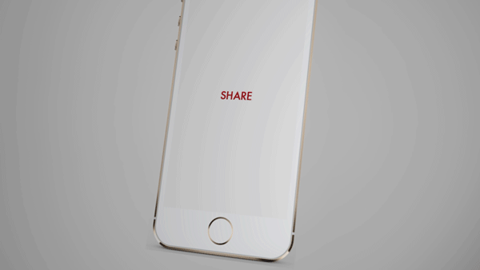
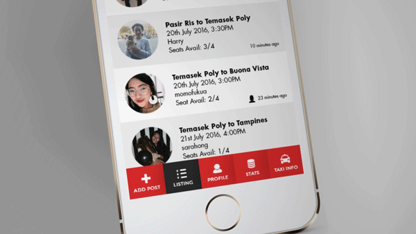
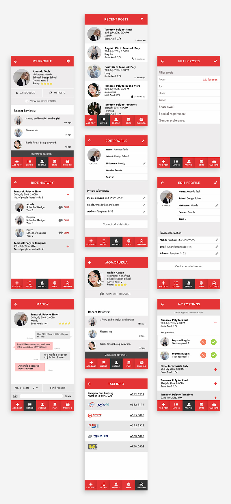

Share
Project Type
User Interface
Partners
Geneve Kwek, Billy Ng
Year
2016
Brief Information
Temasek Polytechnic wanted to hop on the carpooling trend as it is an opportunity to foster a more inclusive community within the school, and help reduce carbon footprints at the same time.
Our task was to work along side the developing team and design the user interface for this carpooling feature that would be implemented in the existing school app. The colour red were used in the design to stick with the branding of the school and since it was a service provided by the school, the design had to be kept simple and clean.
UI Screens
Due to limited resources, the feature only serves as a platform for users to find people to carpool with, not for them to book a car with. This works by 'listings,' whereby users can post or search for carpool requests easily.


